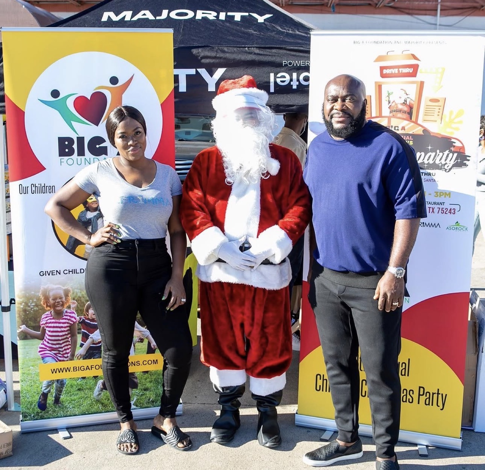

Two homes, one foundation.
Big A Foundation is dedicated to empowering the next generation through education, cultural awareness, and community engagement. Through African cultural events and programs, we celebrate African heritage, bring diverse communities together in Dallas, and strengthen the connection between Africa and the United States, building a brighter future for children on both sides of the Atlantic.
Fifteen years in the making.
Children's Christmas Party
For the past fifteen years, Big A Foundation has hosted a Children's Christmas Party for local Dallas youth, with toys and food for every family who comes through the door.
African cultural programs
Ongoing African cultural programs for the DFW community, celebrating heritage and bringing diverse communities together.
AFRIMMA Fest
Support of AFRIMMA Fest, an annual Dallas music festival presented by Big A Entertainment for more than ten years. The 2026 festival sold out with about 20,000 attendees and was covered by local television and radio.
Ascension Secondary School
Founder Anderson Obiagwu built and donated Ascension Secondary School in Ogberuru, Nigeria, in honor of his late parents.
Back to School Event
A first Back to School Event is planned for 2027.
TODO: confirm date.
New arts and cultural programming
New arts and cultural programming for Dallas audiences, beginning with Comedy Across Continents.

Anderson Obiagwu
Anderson Obiagwu is the founder of Big A Foundation and the founder and CEO of Big A Entertainment, with more than 20 years of experience promoting African music and culture. He is behind the African Muzik Magazine Awards (AFRIMMA) and AFRIMMA Music Fest. Education is central to his work: he built and donated Ascension Secondary School in Ogberuru, Nigeria, in honor of his late parents.
Led by people who show up.
Anderson Obiagwu
Sylvia Nzeakor
We care, wherever that takes us.
Since our earliest days, that has been the whole idea: show up for the people in front of you, whether that is a family in DFW or a child across the Atlantic. It is the thread running through every program, every party, every trip to Nigeria.
Two organizations, one partnership.
Big A Foundation is a 501(c)(3) nonprofit organization. Donations made to Big A Foundation support its charitable programs in Dallas-Fort Worth and Nigeria, and are tax-deductible to the extent allowed by law.
Big A Entertainment is a separate, for-profit business founded by Anderson Obiagwu. It partners with Big A Foundation to present cultural events, including AFRIMMA Music Fest and comedy shows. Ticket purchases for Big A Entertainment events are not donations to the Foundation and are not tax-deductible.
TODO: this note needs director approval before it is treated as final.